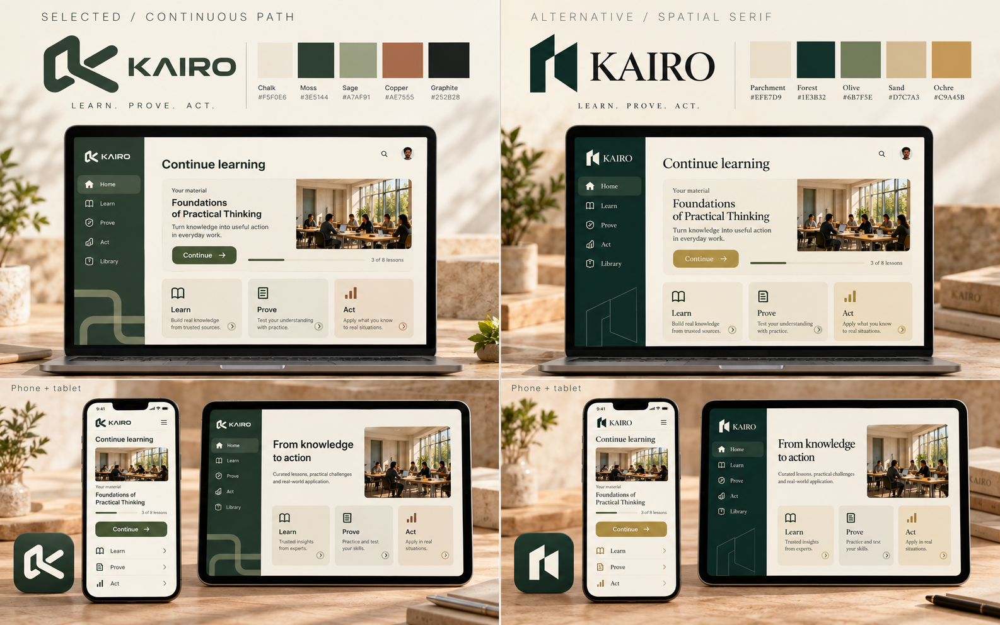
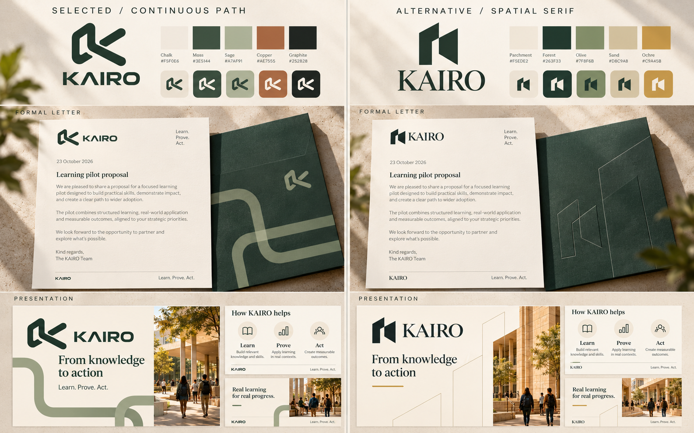
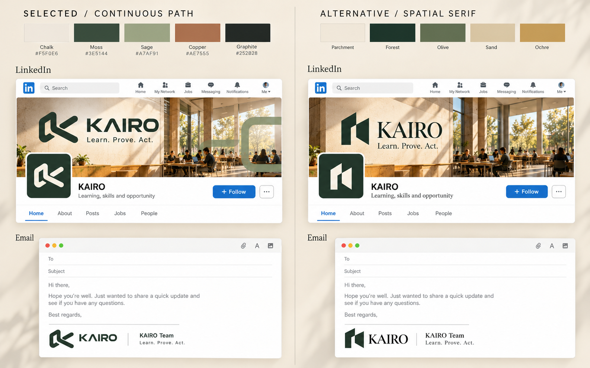

Your continuous-path identity.
The serif alternative beside it.
The earlier comparison used the wrong selected design. Your attached rounded path symbol, geometric KAIRO lettering and flowing graphics are the selected baseline. This gallery corrects that reference.
Left: Selected / Continuous Path. Rounded mark, geometric wordmark, sage/copper accents.
Right: Alternative / Spatial Serif. Sharp architectural mark, serif wordmark, forest/sand accents.
App, laptop, phone and tablet.

Whole identity systems are compared: both the wordmark and compact mark differ. Content and layouts are matched as closely as practical.
Formal letter and presentation.

The selected source of truth.

This image defines the user's selection regardless of earlier letter labels. Prior serif vector studies remain alternatives.
LinkedIn and email.
